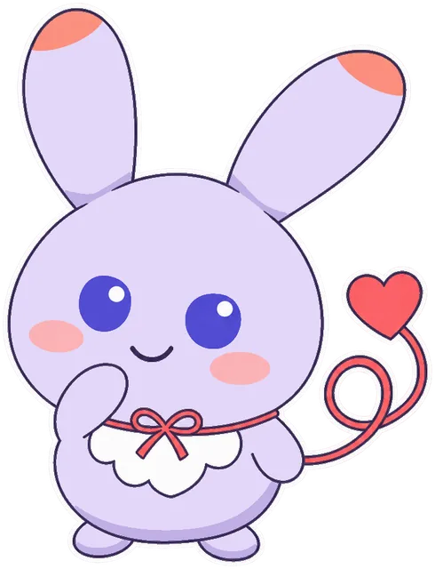
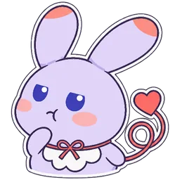
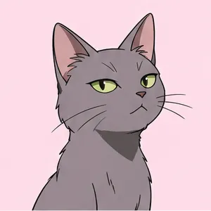

PROFILE
2人と1匹のプロフ
顔のアイコンで切り替えます。表情のボタンを押すと、顔が変わります。
「いいね、届けてきます！」
いいねの手紙を届ける、伝書バトの郵便屋さん
ハトリ
お知らせ係- 名前の由来
- 伝書バトの「ハト」に、ハートを掛けて。
- 出てくる場所
- サイドバーのお知らせ欄と、実績のお知らせ。マッチするとにっこり、返事がないとしょんぼりします。さっと一周では、画面の下で案内もします。
- 性格
- 元気で、思ったことがすぐ顔に出ます。フォリオを先輩として慕っています。
- 見た目
- 帽子のハートのバッジと、背中の小さな羽。
表情


「数字を見てから決めましょう」
いいねの配り方を分析する、恋愛コンサルタント
フォリオ
解説係- 名前の由来
- ゲーム名の Heartfolio から。
- 出てくる場所
- 遊び方・活動の分析・フォリオの相談室の画面と、反応率グラフの横。グラフの読み方を説明します。さっと一周では、ハトリと交代で案内します。
- 性格
- 落ち着いた、ハトリの先輩。勘より数字を信じるタイプ。
- 見た目
- 丸い眼鏡と、低い位置で結んだ髪。タブレットはいつも手放しません。
表情



「その縁、結んであげよっか？ タダじゃないけど」
恋の縁を結ぶ、赤い糸の妖精
ユイ
ショップの店番- 名前の由来
- 縁を結ぶの「結（ゆい）」から。
- 出てくる場所
- 特別なお知らせ（最初のマッチ・クリアなど）と、ショップの店番。
- 性格
- にこにこしながら縁を結んであげると持ちかける、ちょっと腹黒い妖精。恋がうまくいくと、本気で喜びます。
- 見た目
- 長い耳と、赤い糸のしっぽ。首にも同じ糸の蝶結び。
表情


RELATIONSHIP
2人と1匹の関係
後輩先輩
縁を結ぶと持ちかける
ハトリとフォリオ
ハトリはフォリオの後輩。いいねを届けるのがハトリ、届いたあとの数字を読むのがフォリオです。
ユイ
赤い糸で縁を結ぶ妖精。2人の仕事とは別に、ショップで「縁を結んであげよっか」と持ちかけてきます。
SPECIAL
ときどき、ちょっと変わったお相手も
カードの中に、ふつうとは少し違うプロフの人が混ざっていることがあります。
-
ピポラ3万2千歳
地球の調査員（銀河連邦から出向中）
地球の調査に来ました。地球の人とデートするのも、調査のうちです。
-
モカ3歳
看板犬（駅前のパン屋）
駅前のパン屋の看板犬です。パンの耳が好きです。ワン。
-

ルナ5歳
看板猫（商店街の酒屋）
酒屋の看板猫です。返事は、気が向いたときにします。
-
エレナ35歳
宇宙飛行士
宇宙飛行士です。宇宙から見た夜景の話なら、何時間でもできます。
%20scale(.52)%20translate(-50%20-48)'/%3e%3c/mask%3e%3c/defs%3e%3cg%20mask='url(%23ring)'%3e%3cpolygon%20points='50,48%2050,-50%20150,-50%20150,148'%20fill='%236b5cff'/%3e%3cpolygon%20points='50,48%20150,148%20-50,148%20-50,66'%20fill='%23c25cf0'/%3e%3cpolygon%20points='50,48%20-50,66%20-50,-50%2050,-50'%20fill='%23ff7a6b'/%3e%3cg%20stroke='%23fff'%20stroke-width='4'%3e%3cline%20x1='50'%20y1='48'%20x2='50'%20y2='0'/%3e%3cline%20x1='50'%20y1='48'%20x2='110'%20y2='108'/%3e%3cline%20x1='50'%20y1='48'%20x2='-10'%20y2='59'/%3e%3c/g%3e%3c/g%3e%3cg%20stroke='%23fff'%20stroke-linecap='round'%20stroke-linejoin='round'%20fill='%23fff'%3e%3cpolyline%20points='26,64%2040,53%2051,59%2081,23'%20fill='none'%20stroke-width='12'/%3e%3cpolygon%20points='89,13%2087.5,28%2075.5,19'%20stroke-width='6'/%3e%3c/g%3e%3cg%20stroke='%231f1b3a'%20stroke-linecap='round'%20stroke-linejoin='round'%20fill='%231f1b3a'%3e%3cpolyline%20points='26,64%2040,53%2051,59%2081,23'%20fill='none'%20stroke-width='6'/%3e%3cpolygon%20points='89,13%2087.5,28%2075.5,19'%20stroke-width='2'/%3e%3c/g%3e%3c/svg%3e)